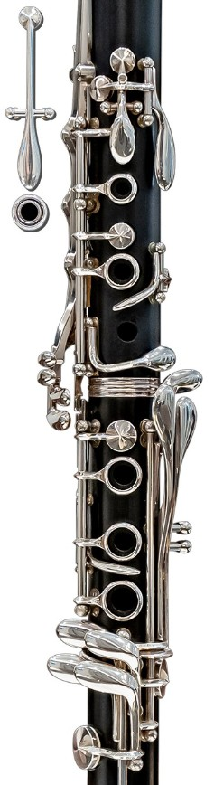

PASSER À LA FLÛTE
TRANSPOSITION SIB : OFF
🎷 Espace Détente - Clarinette & Flûte
---
TEMPO
100%
📁 CHOISIR UN FICHIER
Aucun fichier
Partition (Solo)
Rendre muet
Accomp. (Ctrl+Clic)
LANCER
STOP / RESET